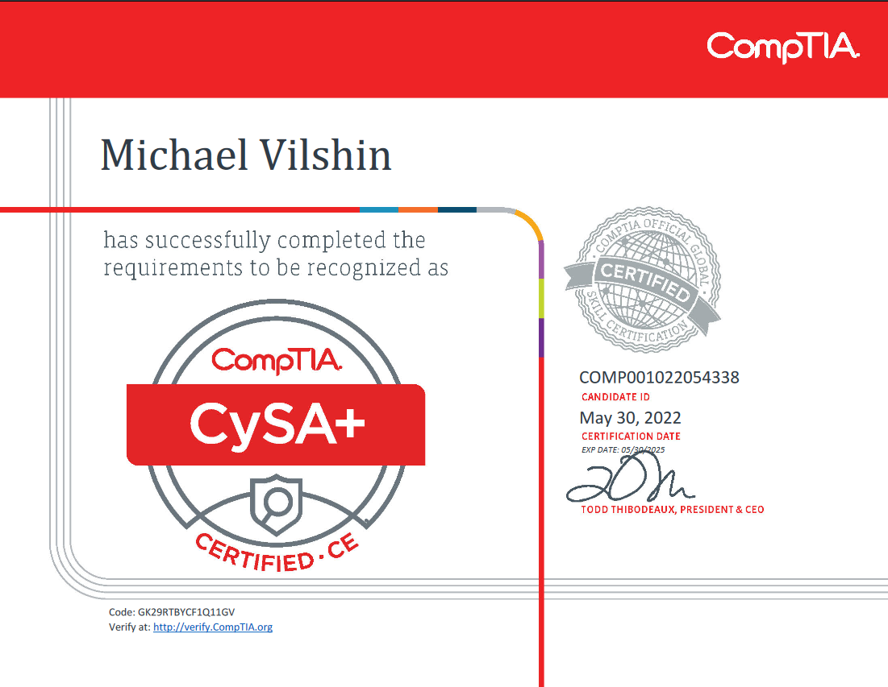
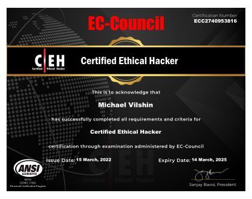

Michael Vilshin
Cyber Security Engineer, Tier 3 Cyber Analyst, and Response Team Member
About
Cyber Security Engineer, Tier 3 Cyber Analyst, and part of the Response Team.
Experienced in client management, project leadership, and streamlining work processes.
Responsible, assertive, precise, and with a high level of self-learning ability.
Contact Information
Email: michaelvilshin6@gmail.com
LinkedIn: michael-vilshin-5a1aa9215
Languages
Hebrew
English
Russian
Experience
Cyber Security Engineer and Response Team Member Experis Cyber
Performing research on relevant threats, implementing monitoring strategies, and updating strategies both within the organization and in client organizations as Professional Services.
Streamlining and optimizing work processes, setting up systems, leading professional projects, creating automations, and participating in Pre-Sale meetings as a professional authority.
Providing real-time responses to clients during cyber incidents, analyzing and investigating 'infected' computer systems, analyzing suspicious files,
identifying vulnerabilities and penetration methods in client systems, and restoring systems to operational status.
Conducting in-depth analysis of malicious files to extract identifiers and discover methods of operation.
Information Security Implementer at Experis Cyber
Managing and calibrating the organization's SIEM system, analyzing events received by the system to refine and improve the system and monitoring capabilities.
Implementing intelligence and lessons from previous incidents, writing monitoring rules, creating statistical reports, providing support and assistance to clients regarding SIEM systems and rules.
Investigating current events and creating weekly intelligence reports for the company's clients, including details and technical signatures of the most relevant threats.
Setting up new monitoring environments and working in various organizational environments such as IT, OT, and diverse cloud environments.
SOC Analyst at Experis Cyber
Conducting in-depth investigations of security incidents using various security systems, event management systems, firewall systems, and more to gather additional information about the incident.
Monitoring and analyzing network traffic for the company's clients, analyzing suspicious logs, and supervising server integrity at the hardware level.
Participating in exercises that test the company's response to cyber incidents.
Education
-
IBM Certified Analyst
Certification focused on expertise in analyzing and responding to cyber security threats using IBM technologies and methodologies.
The exam tests knowledge in areas such as:
Advanced threat intelligence and incident response
Use of IBM Security QRadar for monitoring and analysis
Implementing and managing security measures using IBM tools
Conducting in-depth investigations of security incidents
Optimizing the security framework of the organization
-
Comptia Cysa+
Certification in Cyber Security Analysis
The exam tests knowledge in areas such as:
Using intelligence and security systems to protect the organization
Analyzing and interpreting information
Identifying and mitigating security vulnerabilities
Analyzing and optimizing the organization's security framework
Responding to security incidents and restoring system integrity -
Certified Ethical Hacker (EC-Council CEH)
The exam tests knowledge and familiarity with systems,
tools, techniques, and methodologies relevant in today's market used by hackers to assess resilience and protect the organization -
Cyber Security Course at HackerU College
In-depth course on various security topics including organizational security systems,
resilience testing of websites, Android devices, and organizational infrastructure, automation with Python, and working in Linux and Microsoft environments